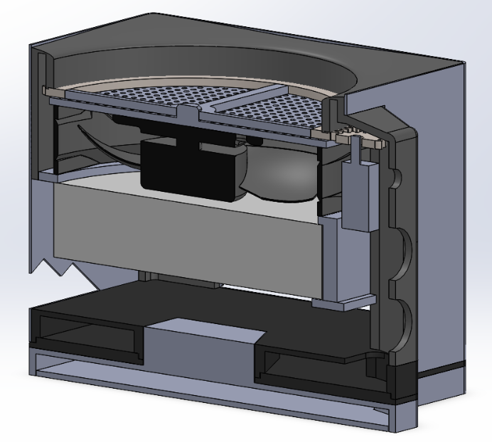
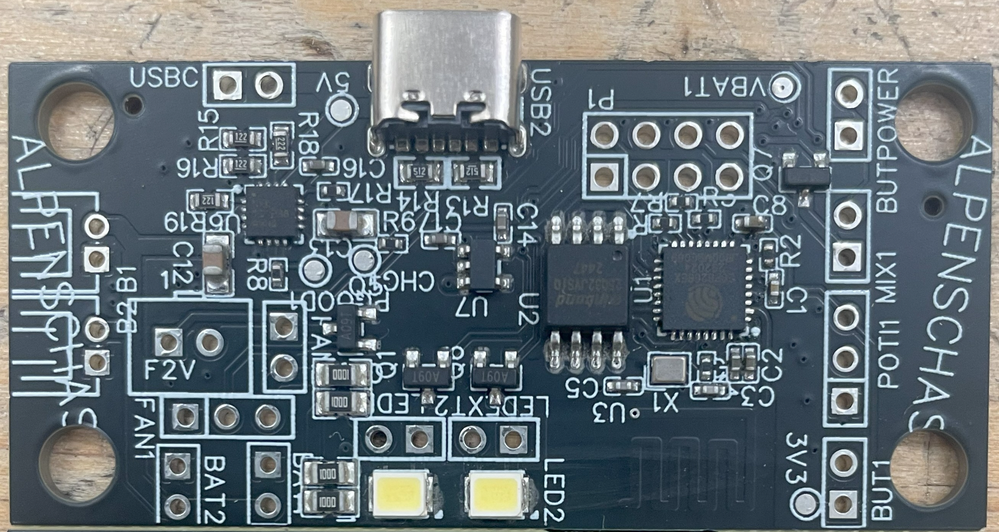
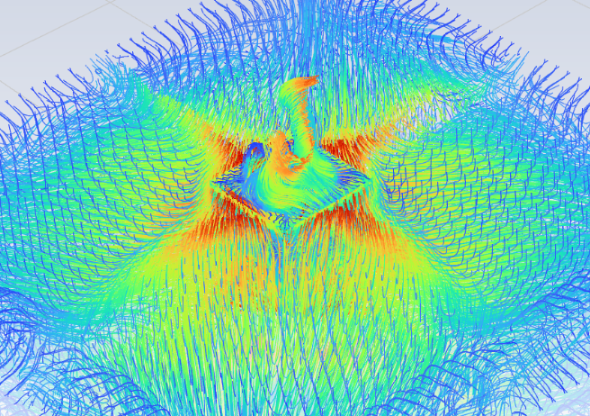
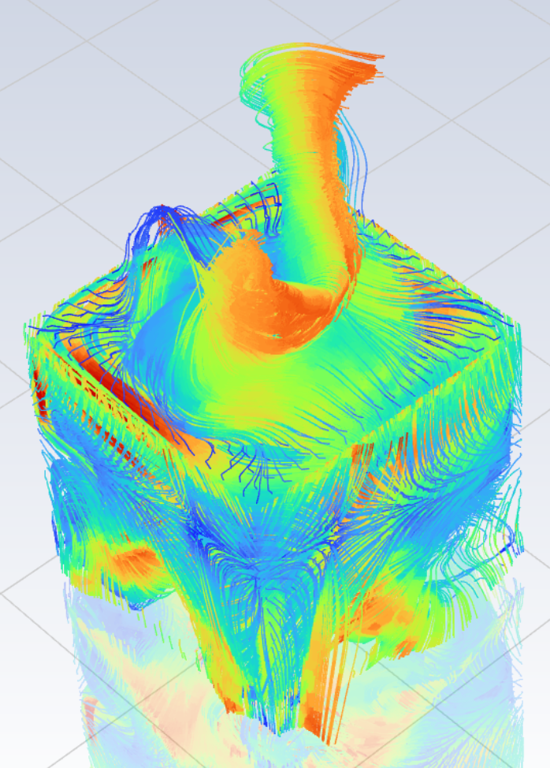
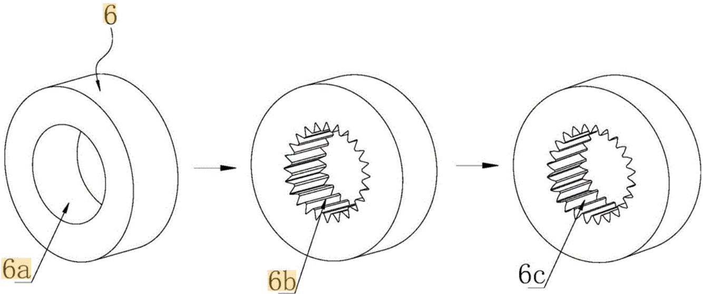
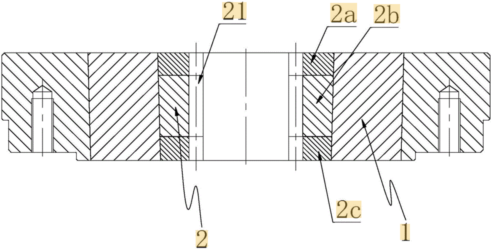

I am a mechanical engineer focused on product design, prototyping, and turning early technical ideas into working systems. My work spans robotic manipulation, consumer air-quality products, embedded sensing, and manufacturing tooling.
Across research, product development, and manufacturing environments, I have worked with CAD, 3D printing, silicone molding, PCB development, CFD, FEA, and embedded hardware. I contributed to related to gear manufacturing and tooling design.
I am currently seeking opportunities where I can contribute mechanical design, prototyping, and systems-thinking skills to an engineering or design team.
Education
Master's in Mechanical Engineering (Product Design)University of California, Berkeley and The Fung Institute for Engineering Leadership
Bachelor's in Mechanical Engineering, Minor in ManagementPurdue University
Redesigned a research-grade smart suction cup into a lower-cost, compact, modular robotic gripper for trash sorting and industrial manipulation. The system uses multi-chamber pressure sensing to provide tactile feedback and help robotic arms detect and correct grasping errors.
My Role
Contributed to the mechanical and electronics redesign of the suction cup module, including casing integration, tubing cover design, pressure-sensor packaging, and the transition from a prototype to a compact custom PCB.
Helped select components and microcontroller architecture, supported prototype assembly/testing, and communicated the design through technical presentations and reports.
Impact: This project supports more reliable robotic recycling and makes tactile robotic grippers more accessible for research labs and industrial automation.
Tools: KiCAD, JLCPCB manufacturing, microcontroller development (CircuitPython), OnShape, 3D Print/Slicing (Bambu), Silicone Molding




Designed a compact air purifier and active fragrance dispenser that combines a HEPA filter, DC fan, and motorized zeolite-pearl mixing chamber in one portable unit. A slow-speed gearbox rotates the fragrance-loaded pearls so scent is released evenly into the airflow while the filter path cleans the air.
My Role
Led product development from problem definition through final design review: FMEA, tradeoff analysis, manufacturability evaluation, CAD, simulation, PCB design, and CFD.
Aligned mechanical design decisions with user needs: air quality, filter serviceability, fragrance distribution, and ease of assembly/disassembly.
Impact: The project explored a consumer-facing air-quality product that could improve indoor comfort while encouraging more structured, serviceable product design.
Tools: SOLIDWORKS, ANSYS Fluent, KiCAD.


Supported manufacturing-focused mechanical design work for internal gear production, including tooling, fixtures, inspection aids, and production troubleshooting. Contributed to related to gear manufacturing and tooling design.
My Role
Designed and refined tooling, cutting tools, and inspection fixtures to improve setup repeatability, part stability, and machining accuracy.
Diagnosed production issues and reviewed CAD/tooling changes with senior engineers.
Connected design decisions to shop-floor outcomes: setup time, accuracy, and process consistency.
Impact: Improved practical manufacturing efficiency and reliability, helping engineering designs become more repeatable in production.
Tools: SOLIDWORKS, Siemens NX, machining process.
Designed a hands-free mobility aid for patients recovering from knee or upper-leg injuries. The device redirects load away from the injured knee through an external support structure, helping users maintain mobility while reducing reliance on traditional crutches.
My Role
Refined the prototype’s mechanical architecture, including the support frame, custom hinge, spring-assisted linkage, telescoping structure, and user attachment interfaces.
Converted CAD concepts into 3D-printed parts, assembled the device, and tested fit, strength, manufacturability, and usability.
Impact: This project explored a safer and more independent mobility solution for knee rehabilitation by addressing the limitations of standard crutches, including hand use, discomfort, and risk of unsafe weight-bearing.
Tools: SolidWorks, 3D Printing, FEA/Structural Analysis.
Tools and Skills
OnShapeSiemens NXSOLIDWORKSFusion 360PTC CreoKiCADABAQUS FEA3D PrintingMandarin Chinese